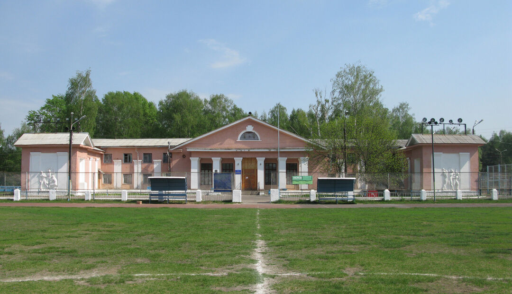
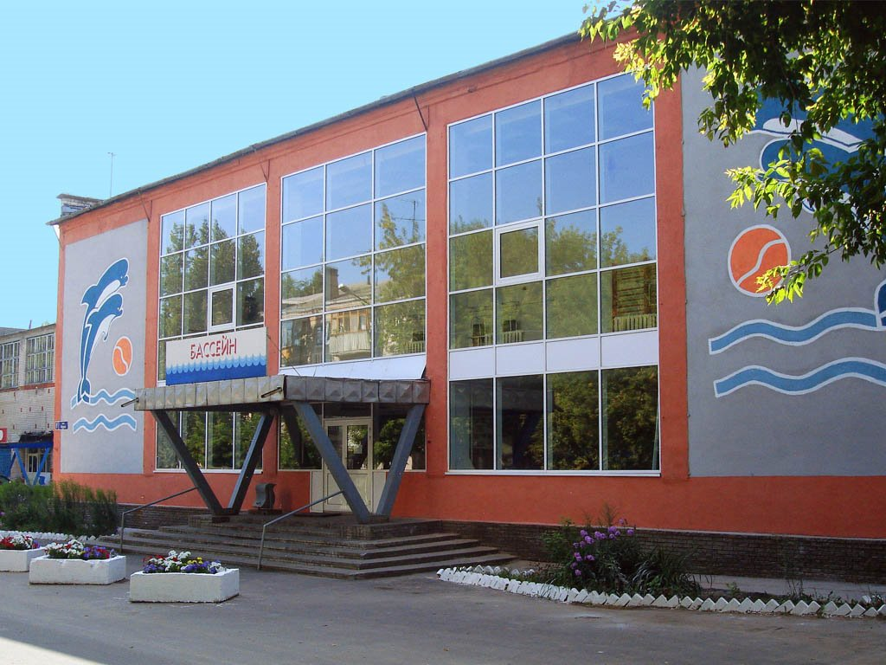

► Спорт
В Заволжье существует городская футбольная команда «Мотор», ДЮСШ по хоккею «Мотор» и др. Есть стадион, который включает поле для футбола (с трибунами) и с беговыми дорожками, хоккейную коробку, поле для большого тенниса, бассейн (25 метров), дом спорта (с различными секциями), школы бокса, лыжную базу, стрелковый тир, ледовый дворец (с искусственным льдом).


13 августа 1998 года в городе родились Арина Аверина и её сестра-близнец Дина Аверина – многократные чемпионки мира и Европы по художественной гимнастике. Дина Аверина заняла 2-е, а Арина Аверина – 4-е место в финале личного многоборья по художественной гимнастике на летних Олимпийских играх 2020 года в Токио.
 telegram
telegram instagram
instagram